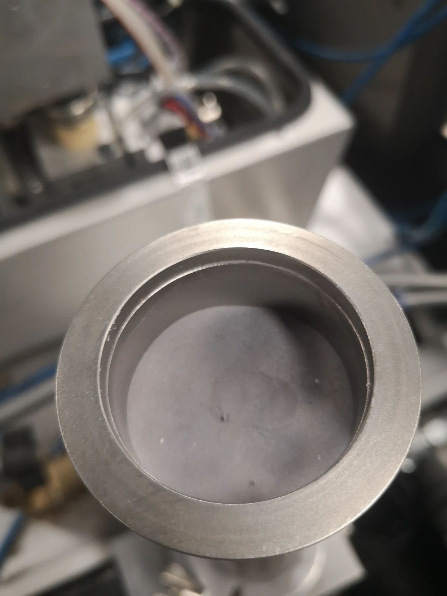
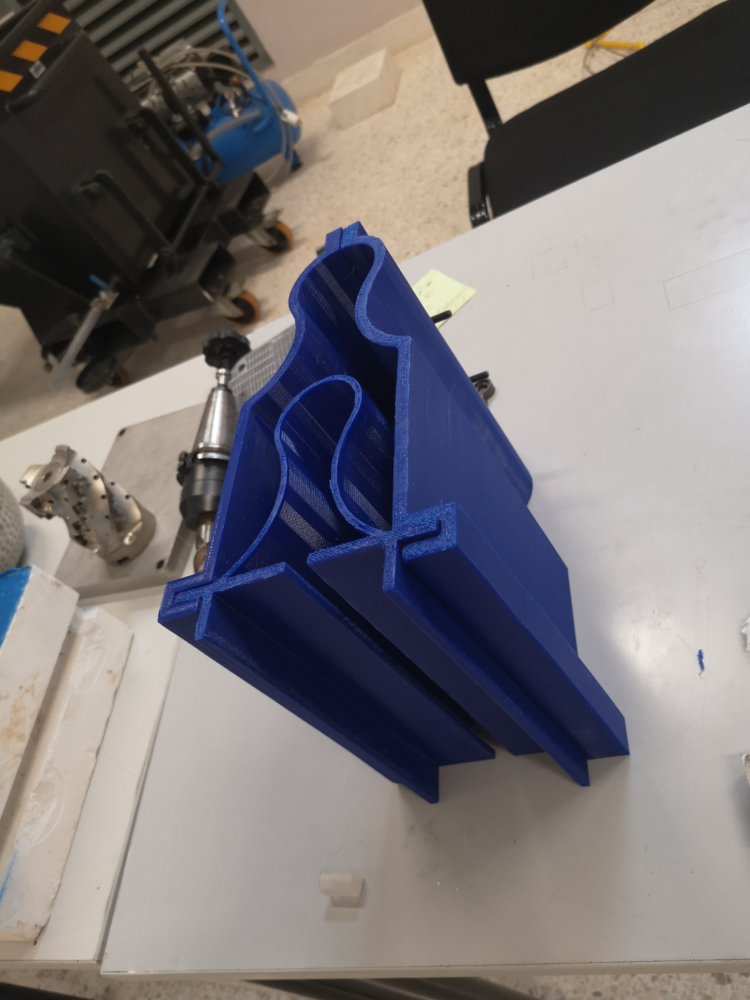
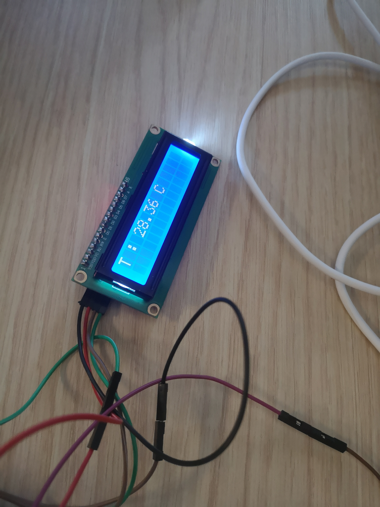
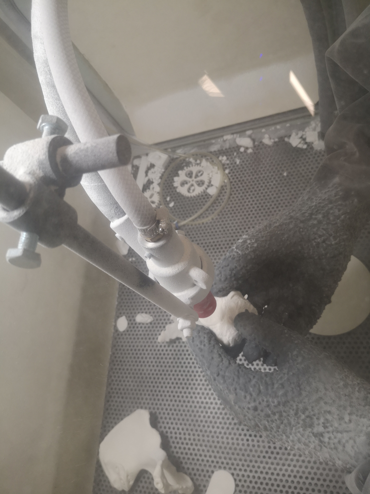
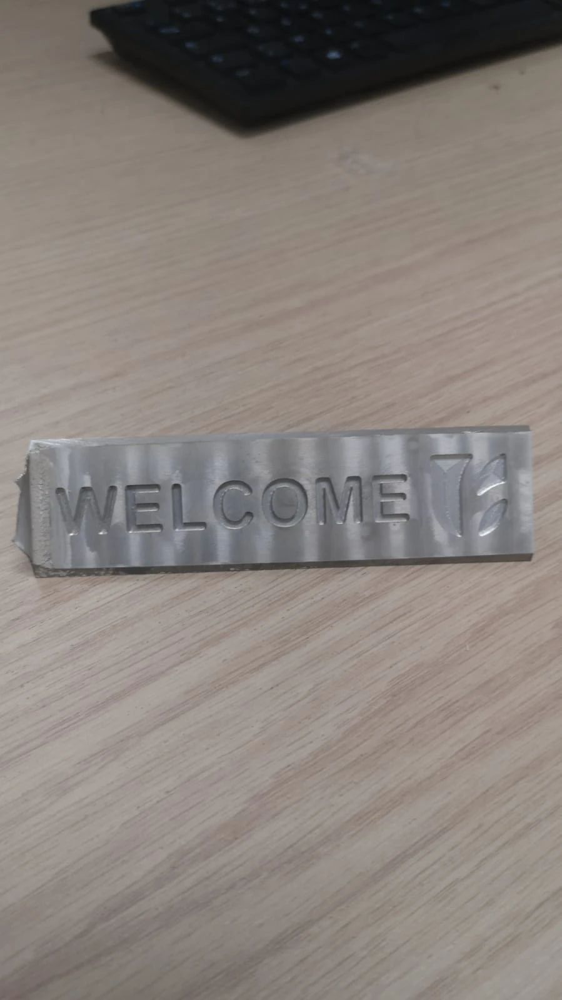
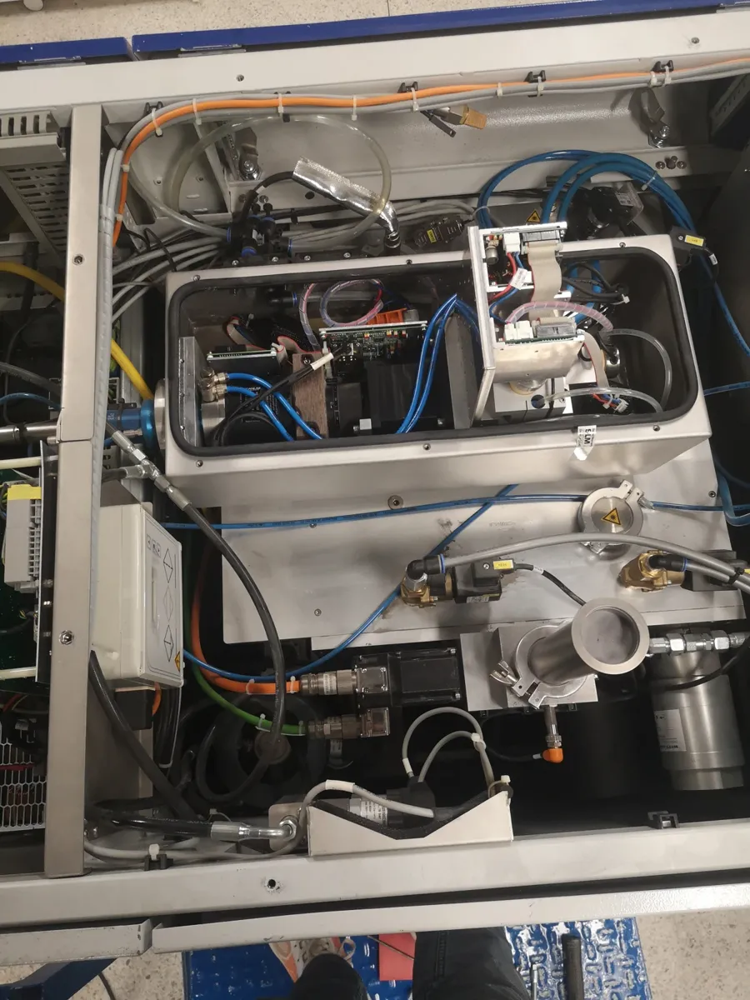

UEMF · Advanced Manufacturing Lab
UEMF Manufacturing Lab — Design to Production
Industrial experience
Project overview
I designed and fabricated a powder-flowability test bench during my manufacturing-lab internship, using ASTM B213 as a reference.
My work included a powder-flowability test bench referenced to ASTM B213, mold design and machining, and practical fabrication and finishing. I learned to consider machine capabilities, part interfaces and tooling—not just the final geometry.

Engineering contribution
From CAD to the workshop
I developed mechanical geometry and assemblies, prepared CAM operations using Fusion 360 and worked with CNC equipment and manual finishing. I contributed to the design and fabrication of a powder-flowability test bench, an interlocking-brick mold and a machined spherical-part mold. I also took part in tooling planning and preventive maintenance, gaining a more complete view of what production requires. My wider lab activities exposed me to SLS post-processing, prototyping and measurement workflows.
A closer look
Inside the work





Result
The outcome
Fabricated laboratory parts, tooling and a powder-flowability apparatus, together with CAM, CNC and additive-process experience. For an employer, the transferable value is designing parts with real production and workshop constraints in mind.
Methods & tools
- CATIA V5
- Fusion 360 CAM
- Haas VF-2
- FDM & SLS
- Tooling & mold design
- Workshop maintenance